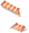
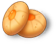
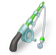
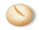

0.5초
NRU 첫 채팅
영상 12.3초 제외
1.6초
RU 첫 입력
인게임 보드
64.5MB
NRU 메모리 정점
추정 · 다운로드 9.1MB
41.0MB
RU 메모리 정점
추정 · 다운로드 10.4MB
두 갈래 부팅 직후부터 갈라진다
첫 입력이 기다림
안 기다림
영상 재생
진한 부분 = 이 단계가 얹은 양 · 눈금은 두 갈래 공통(다운로드 0~10.4MB · 메모리 0~64.5MB)
NRU신규 유저 · 영상 → 마을 → 첫 채팅
- 0.0s엔진+스크립트
- 0.2s
런치 씬
4927폰트 1씬 1 - 0.5s
공용 풀
20애니메이션 1프리팹 7 - 0.5s
영상 팝업 워밍업다운로드만
프리팹 1 - 0.5s
로컬라이즈
데이터 1 - 0.7s부팅 끝
- 0.7s
사운드
사운드 4 - 0.7s
연결 끊김 팝업
애니메이션 2프리팹 1 - 0.7s
영상 클립다운로드만
영상 1 - 1.9s영상 재생12.3초 재생
- 1.9s
채팅 팝업
프리팹 1 - 1.9s
스토리 데이터
데이터 4 - 1.9s
마을 화면 워밍업다운로드만
프리팹 1 - 1.9s
밸런스
데이터 1 - 2.0s
채팅 UI 13장다운로드만
- 2.0s
채팅 풀
프리팹 9애니메이션 2 - 2.0s
첫 채팅 감정 2개다운로드만
애니메이션 2텍스처 외 8개 - 2.4s
마을 에리어 다운로드다운로드만

애니메이션 9프리팹 14텍스처 외 39개 - 14.2s
헤더 아바타 아이콘아이템
- 14.2s
다음 보상 아이콘 3종아이템

- 14.2s
마을 에리어
텍스처 외 39개 - 14.7s
마을 화면
- 14.7s말풍선·이름박스 8장
- 14.7s
첫 줄 감정
- 14.7s첫 입력 · 채팅 첫 줄영상 제외 +0.5초
RU기존 유저 · 인게임 직행
- 0.0s엔진+스크립트
- 0.2s
런치 씬
4927폰트 1씬 1 - 0.5s
공용 풀
20애니메이션 1프리팹 7 - 0.5s
로컬라이즈
데이터 1 - 0.7s부팅 끝
- 0.7s
사운드
사운드 4 - 0.7s
연결 끊김 팝업
애니메이션 2프리팹 1 - 0.7s
밸런스
데이터 1 - 0.7s
헤더 아바타 아이콘아이템
- 0.7s
다음 보상 아이콘 3종아이템
- 0.7s
인게임 화면
프리팹 1텍스처 외 5개 - 0.9s
인게임 풀
프리팹 9애니메이션 5 - 0.9s풀 premake 64노드0.25초
- 1.1s
초기 보드 아이콘 54종아이템



- 1.5s보드 빌드0.15초
- 1.6s첫 입력 · 보드
- 1.6s
보드 후보 아이콘 31종아이템
- 1.6s
채팅 워밍업
프리팹 1데이터 4 - 1.6s
레일 손님 1명
애니메이션 2프리팹 1텍스처 외 10개후보 중 대표 1명 - 1.7s
채팅 UI · 풀
프리팹 9애니메이션 2 - 1.7s
다음 10 심부름 감정 4개다운로드만
애니메이션 4텍스처 외 38개 - 2.1s
오늘 손님 나머지 5명
프리팹 5애니메이션 10텍스처 외 131개 - 3.4s
마을 에리어 다운로드다운로드만
애니메이션 9프리팹 14텍스처 외 39개
이 순서를 읽는 법
왼쪽 시각은 그 단계가 시작하는 때다. 주황은 첫 입력이 끝나길 기다리는 단계, 초록은 첫 입력 뒤에도 이어서 받는 비차단 단계다. 막대는 시작 순서대로 더한 누적이라 다운로드는 회선을 같이 나눠 써서 시각과 정확히 맞지 않는다. 다운로드만 표시는 메모리에 올리지 않고 내려받아 두는 단계라 메모리 막대가 늘지 않는다. NRU는 영상이 도는 동안 채팅 · 마을 · 에리어를 미리 받아 두고, RU는 보드가 뜬 뒤에 나머지를 받는다.
확인 범위 단계 순서와 의존은 클라 코드(BaseIntro · BoardRenderFlow · ChatWarmup)를 따랐고, 다운로드 · 메모리는 파일 크기와 텍스처 w×h×4로 센 값이다(아틀라스 반영 · gzip). 시각은 회선 가정에서 돌린 모델이라 실기와 다를 수 있다. 숫자는 로딩 타임라인과 같은 모델이다 — 첫 채팅은 영상을 뺀 시간, 메모리 정점은 디코딩 텍스처 합(추정)이다. 그 문서의 「마을 진입 메모리 최고」는 에디터 프리뷰 실측(올라온 텍스처 전부)이라 기준이 달라 값이 다르다. 펼침의 썸네일은 그 단계가 새로 받는 텍스처 중 메모리가 큰 순서이고(아이템은 전부), 아틀라스는 대표 한 장에 장수 배지를 달았다. 손님은 후보마다 달라 대표 1명을 보였다.